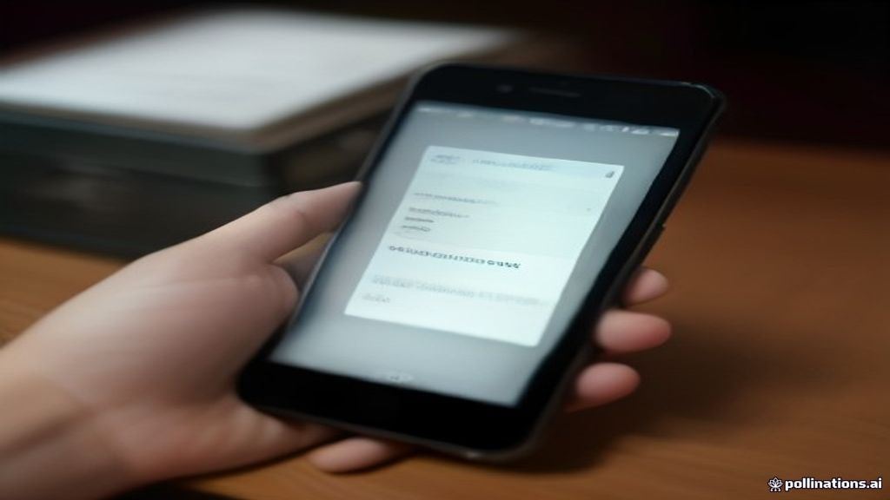

Get Raast P2P & Asaan Digital Accounts: Your 48-Hour Agent-Free Guide
Unlock instant payments and easy banking in Pakistan. Learn how to set up your digital accounts quickly and securely without hidden fees.

Pakistan's financial landscape is rapidly evolving, driven by the State Bank of Pakistan's (SBP) commitment to digital financial inclusion. At the heart of this transformation are Raast P2P (Person-to-Person) instant payment rails and Asaan Digital Bank Accounts. Raast, Pakistan's first instant payment system, facilitates secure, fast, and free transfers between individuals, seamlessly integrated into existing banking applications. It aims to eliminate delays associated with traditional interbank transfers, making digital transactions as simple as sending a text message. Complementing Raast are Asaan Digital Accounts, a groundbreaking initiative designed to bring the unbanked and underbanked population into the formal financial system. These accounts offer simplified banking services with minimal documentation – often just a CNIC – and no minimum balance requirements. The combined power of Raast and Asaan accounts represents a monumental leap towards a cashless economy, providing every Pakistani with direct, easy, and secure access to essential financial services.
The process to set up your Raast ID and open an Asaan Digital Account is surprisingly straightforward and, crucially, entirely free of agent fees. To link your mobile number to Raast, simply access your existing bank's mobile application or internet banking portal. Look for the 'Raast' or 'Manage Raast ID' option, select your bank account to link, and confirm. This process usually takes mere minutes and activates instant P2P payments directly to your mobile number, eliminating the need to share account numbers. It's a secure, one-time setup that vastly simplifies sending and receiving money. Opening an Asaan Digital Account is equally streamlined. Most major banks offer this service through their mobile apps or designated online portals. You typically only need your valid CNIC for verification. The application process is often digital, requiring a selfie and CNIC scan, and many banks promise account activation within 24 to 48 hours. Key features include transaction limits (e.g., PKR 500,000 monthly debit/credit turnover), no minimum balance, and basic banking functionalities accessible from your smartphone. It is imperative to remember that *no agent is authorized to charge any fee* for assisting with Raast linkage or Asaan account opening; these services are designed for direct consumer access.
Embracing Raast and Asaan Digital Accounts offers immediate and significant benefits for Pakistani citizens. Firstly, it champions financial inclusion, providing millions who previously lacked access to formal banking with a secure and regulated platform. This reduces reliance on informal cash channels, which are often less secure and more susceptible to fraud. Instant payments via Raast mean no more waiting for funds to clear, making everyday transactions, bill payments, and remittances incredibly efficient. Secondly, these initiatives empower consumers by offering unparalleled convenience. Basic banking services are now available at your fingertips, eliminating the need to visit physical bank branches for routine transactions. This not only saves time and travel costs but also enhances security by minimizing cash handling. By proactively setting up your Raast ID and considering an Asaan account, you're not just adopting new technology; you're taking control of your financial well-being, participating in a more transparent economy, and safeguarding yourself against unnecessary agent fees or potential exploitation.
Instant Payments for Every Pakistani: The Raast & Asaan Revolution
Pakistan's financial landscape is rapidly evolving, driven by the State Bank of Pakistan's (SBP) commitment to digital financial inclusion. At the heart of this transformation are Raast P2P (Person-to-Person) instant payment rails and Asaan Digital Bank Accounts. Raast, Pakistan's first instant payment system, facilitates secure, fast, and free transfers between individuals, seamlessly integrated into existing banking applications. It aims to eliminate delays associated with traditional interbank transfers, making digital transactions as simple as sending a text message. Complementing Raast are Asaan Digital Accounts, a groundbreaking initiative designed to bring the unbanked and underbanked population into the formal financial system. These accounts offer simplified banking services with minimal documentation – often just a CNIC – and no minimum balance requirements. The combined power of Raast and Asaan accounts represents a monumental leap towards a cashless economy, providing every Pakistani with direct, easy, and secure access to essential financial services.
Your Step-by-Step Guide: Getting Raast & Asaan Accounts in Under 48 Hours
The process to set up your Raast ID and open an Asaan Digital Account is surprisingly straightforward and, crucially, entirely free of agent fees. To link your mobile number to Raast, simply access your existing bank's mobile application or internet banking portal. Look for the 'Raast' or 'Manage Raast ID' option, select your bank account to link, and confirm. This process usually takes mere minutes and activates instant P2P payments directly to your mobile number, eliminating the need to share account numbers. It's a secure, one-time setup that vastly simplifies sending and receiving money. Opening an Asaan Digital Account is equally streamlined. Most major banks offer this service through their mobile apps or designated online portals. You typically only need your valid CNIC for verification. The application process is often digital, requiring a selfie and CNIC scan, and many banks promise account activation within 24 to 48 hours. Key features include transaction limits (e.g., PKR 500,000 monthly debit/credit turnover), no minimum balance, and basic banking functionalities accessible from your smartphone. It is imperative to remember that *no agent is authorized to charge any fee* for assisting with Raast linkage or Asaan account opening; these services are designed for direct consumer access.
Practical Impact: Why Every Pakistani Citizen Needs Digital Banking Now
Embracing Raast and Asaan Digital Accounts offers immediate and significant benefits for Pakistani citizens. Firstly, it champions financial inclusion, providing millions who previously lacked access to formal banking with a secure and regulated platform. This reduces reliance on informal cash channels, which are often less secure and more susceptible to fraud. Instant payments via Raast mean no more waiting for funds to clear, making everyday transactions, bill payments, and remittances incredibly efficient. Secondly, these initiatives empower consumers by offering unparalleled convenience. Basic banking services are now available at your fingertips, eliminating the need to visit physical bank branches for routine transactions. This not only saves time and travel costs but also enhances security by minimizing cash handling. By proactively setting up your Raast ID and considering an Asaan account, you're not just adopting new technology; you're taking control of your financial well-being, participating in a more transparent economy, and safeguarding yourself against unnecessary agent fees or potential exploitation.
Executive Takeaways & Key Insights
- Link your mobile number to Raast via your banking app for free, instant payments in minutes.
- Open an Asaan Digital Account in under 48 hours using just your CNIC, with no agent fees required.
- Enjoy secure, fast, and free P2P transactions and basic banking directly from your smartphone.
Frequently Asked Questions
Is there any fee to link my mobile number to Raast?
No, linking your mobile number to Raast is completely free of charge. Banks are not allowed to charge for this service, ensuring accessible instant payments for everyone.
Can I open an Asaan Digital Account if I already have a regular bank account?
Yes, you can open an Asaan Digital Account even if you have another bank account. It's designed for simplified banking with lower requirements, serving different financial needs.